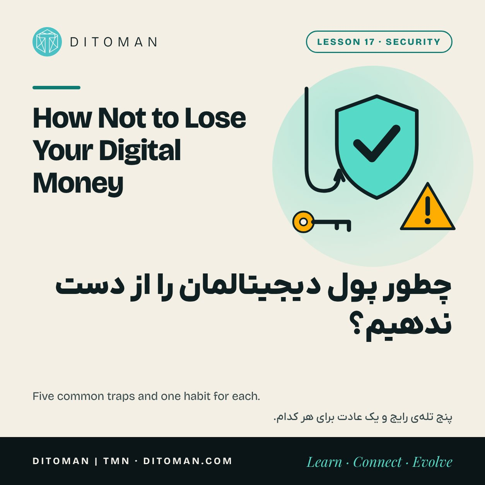

如何不丢失你的数字资产
چطور پول دیجیتالمان را از دست ندهیم؟
大多数丢失加密货币的人并不是被黑客攻击。他们是被说服、被催促，或只是犯了一个小错误。本课介绍丢钱最常见的五种方式，以及阻止每一种的朴素习惯。
بیشتر کسانی که کریپتو از دست میدهند هک نمیشوند. قانع میشوند، عجله میکنند یا فقط یک اشتباه کوچک میکنند. این درس پنج راه رایج از دست رفتن پول و عادتهای سادهای را که جلوی هر کدام را میگیرد مرور میکند.
课程内容
محتوای درس
可用英文或波斯文阅读本课。
درس را به فارسی یا انگلیسی بخوانید.
人们想象丢失加密货币时，脑海中是黑暗房间里的黑客在破解密码。事情很少是这样发生的。大多数情况下是主人亲自开了门：在假网页里输入一句话，没读就批准了某件事，或者把钱发给了一位新“朋友”。
第16课解释了为什么这一点如此重要：区块链转账无法撤销。银行有时能把钱拉回来，区块链不能。所以预防就是全部，好消息是预防大多是习惯问题。
问题有多大
分析公司 Chainalysis 估计，2025年加密骗局从受害者手中夺走了超过170亿美元，创下纪录。骗子假扮他人（如官员、公司或客服人员）的骗局在一年内增长了超过1,400%，人工智能工具让伪造的声音、面孔和消息变得令人信服，也助长了这一趋势。
这些数字不是恐惧的理由，而是学习五种模式的理由。
1. 假网页（钓鱼）
你收到一个看起来像你的钱包、交易所或某个代币官网的链接。该页面是复制品。它要求你登录，或通过输入助记词来“验证”你的钱包。一旦你这样做，钱包就空了。
习惯： 永远不要从消息、广告或搜索结果中的链接进入任何存放资金的网站。自己输入网址或使用保存的书签。并记住第13课的规则：正规渠道绝不会索要助记词。
2. 假帮手
你在公开群里问了一个问题。一分钟内，一位“客服人员”私下给你发消息，好心提出帮你解决。他们向你索要助记词、你的屏幕，或一笔小额“验证”付款。
习惯： 真正的客服不会主动发起私聊。主动联系你的都是陌生人，不管他们的头像怎么写。
3. 盲目签名
许多应用会要求你的钱包签署一项授权。有些授权让合约有权移动你的代币，有时没有上限也没有截止日期。假空投或“免费铸造”网站用的正是这一招：你以为自己在领礼物，实际上是在交出权限。
习惯： 读懂钱包要你签署的内容。如果不理解，就拒绝。准备一个只放小额资金的独立钱包用来试新网站，永远不要连接存放你积蓄的钱包。
4. 耐心的朋友
一位友善的人出现在社交应用或交友网站上。接下来是数周愉快的交谈。然后他们提到一项收益很好的投资，并教你如何加入。平台显示利润在增长。当你想提现时，却要先支付“税款”和“费用”。那些利润从来就不是真的。
习惯： 一个把你引向某项投资的网友是在照着剧本走。到此为止，先在当面认识的人那里商量，再汇出任何钱。
5. 保证回报
某个项目承诺固定的高回报，按日或按周支付，还有拉朋友加入的奖金。早期成员确实拿到了钱，但用的是后来成员的钱。当新的存款放缓，它就停了。
习惯： 在金融中，没有风险的高回报并不存在。问问钱从哪里来。如果诚实的回答是“来自新成员”，那就是金字塔骗局。
| 如果有人…… | 很可能是…… | 这样做 |
|---|---|---|
| 索要你的助记词 | 盗窃 | 停下。没人需要它。 |
| 以“客服”身份主动给你发消息 | 假帮手 | 只使用官方网站。 |
| 说你必须立刻行动 | 用压力阻止你思考 | 等一天。 |
| 承诺固定的高回报 | 金字塔骗局 | 问问钱从哪里来。 |
| 提供免费代币让你“领取” | 签名陷阱 | 不要连接你的主钱包。 |
诚实的错误
并非每次损失都涉及罪犯。人们也会因为发错网络、粘贴错地址，或弄丢写有助记词的纸而丢钱。第13课和第16课讲了这些，而每种情况下的习惯都相同：放慢速度，检查两遍，先用小额测试。
还有一种较新的把戏介于错误与骗局之间。骗子从一个开头和结尾与你常用地址相似的地址发来一小笔钱。之后你从历史记录里复制了这个相似地址，而不是真的那个。所以要从源头复制地址，而不是从过去的交易里复制。
如果已经发生了
把剩下的任何资产转到一个带有新助记词的新钱包。保存交易哈希和消息记录。向相关平台和你所在国家的警方报案。
然后要第二次小心。被骗的人常常会被承诺预付费用后帮你追回钱的“追回服务”联系。那是同样的犯罪，再来一次。
本课要点
大多数损失始于说服，而不是黑客攻击。
五种模式涵盖了大多数情况：假网页、假帮手、盲目签名、耐心的朋友、保证回报。
紧迫感是共同的线索。真正的机会经得起一天的思考。
永远不要分享助记词，永远不要签署看不懂的东西，永远不要点链接去往你的钱。
如果出了问题，保护剩下的，保留证据，并无视任何兜售追回服务的人。
وقتی به از دست دادن کریپتو فکر میکنیم، هکری در اتاقی تاریک به ذهن میآید که رمزی را میشکند. کمتر پیش میآید که اینطور باشد. در بیشتر موارد خودِ صاحب پول در را باز میکند: عبارتی را در یک صفحهی جعلی وارد میکند، چیزی را نخوانده تأیید میکند یا برای یک «دوست» تازه پول میفرستد.
درس ۱۶ توضیح داد چرا این موضوع اینقدر مهم است: انتقال روی بلاکچین برگشت ندارد. بانک گاهی میتواند پول را برگرداند، بلاکچین نمیتواند. پس همهچیز به پیشگیری برمیگردد و خبر خوب این است که پیشگیری بیشتر یک عادت است.
مسئله چقدر بزرگ است
شرکت تحلیلی Chainalysis برآورد کرده که کلاهبرداریهای کریپتویی در سال ۲۰۲۵ بیش از ۱۷ میلیارد دلار از قربانیان گرفتهاند؛ یک رکورد. کلاهبرداریهایی که در آن فرد خودش را جای کس دیگری میزند، مثل مأمور، شرکت یا پشتیبانی، در یک سال بیش از ۱۴۰۰ درصد رشد کرده است. ابزارهای هوش مصنوعی هم که صدا، چهره و پیام جعلی را باورپذیر میکنند به این رشد کمک کردهاند.
این عددها دلیلی برای ترس نیستند. دلیلیاند برای یاد گرفتن پنج الگو.
۱. صفحهی جعلی (فیشینگ)
لینکی میرسد که شبیه کیف پول، صرافی یا سایت یک توکن است. صفحه یک کپی است. از شما میخواهد وارد شوید یا برای «تأیید» کیف پول، عبارت بازیابی را وارد کنید. همان لحظه که وارد کنید، کیف پول خالی میشود.
عادت: برای رسیدن به هر چیزی که پول در آن است، هیچوقت از لینکِ داخل پیام، تبلیغ یا نتیجهی جستوجو استفاده نکنید. آدرس را خودتان تایپ کنید یا از نشانک ذخیرهشده وارد شوید. قاعدهی درس ۱۳ را هم به یاد داشته باشید: هیچ فرد یا شرکت درستی عبارت بازیابی نمیخواهد.
۲. کمککنندهی جعلی
در یک گروه عمومی سؤالی میپرسید. در کمتر از یک دقیقه یک «کارشناس پشتیبانی» در پیام خصوصی، با مهربانی پیشنهاد حل مشکل میدهد. بعد عبارت بازیابی، تصویر صفحه یا یک پرداخت کوچک برای «تأیید» میخواهد.
عادت: پشتیبانی واقعی گفتوگوی خصوصی را شروع نمیکند. هر کس اول سراغ شما بیاید غریبه است، عکس پروفایلش هر چه باشد.
۳. امضای نخوانده
بسیاری از برنامهها از کیف پول شما میخواهند یک «مجوز» را امضا کند. بعضی مجوزها به یک قرارداد اجازه میدهند توکنهای شما را جابهجا کند؛ گاهی بدون سقف و بدون تاریخ پایان. ایردراپ جعلی یا سایت «مینت رایگان» دقیقاً از همین استفاده میکند: فکر میکنید هدیه میگیرید ولی دسترسی را واگذار میکنید.
عادت: چیزی را که کیف پول برای امضا نشان میدهد بخوانید. اگر نمیفهمید، رد کنید. برای امتحان سایتهای تازه یک کیف پول جدا با مبلغ کم داشته باشید و کیف پولی را که پساندازتان در آن است هرگز به جایی وصل نکنید.
۴. دوست صبور
کسی خوشبرخورد در یک شبکهی اجتماعی یا اپ دوستیابی پیدا میشود. چند هفته گفتوگوی خوشایند ادامه دارد. بعد از سرمایهگذاریای میگوید که عالی پیش میرود و راه ورود را یادتان میدهد. پلتفرم سودهای رو به رشد نشان میدهد. وقتی میخواهید برداشت کنید، اول باید «مالیات» و «کارمزد» بدهید. آن سودها هیچوقت واقعی نبودهاند.
عادت: آشنای اینترنتیای که شما را به سمت یک سرمایهگذاری میبرد، از روی یک متن آماده جلو میرود. همانجا بایستید و پیش از فرستادن هر مبلغی، با کسی که از نزدیک میشناسید حرف بزنید.
۵. سود تضمینی
پروژهای سود ثابت و بالا وعده میدهد، با پرداخت روزانه یا هفتگی و پاداش برای آوردن دوستان. اعضای اول واقعاً پول میگیرند؛ از پول اعضای بعدی. وقتی واریزهای تازه کم شود، همهچیز میایستد.
عادت: در امور مالی، سود بالای بدون ریسک وجود ندارد. بپرسید این پول از کجا میآید. اگر جواب صادقانه «از اعضای جدید» باشد، طرح هرمی است.
| اگر کسی… | احتمالاً… | این کار را بکنید |
|---|---|---|
| عبارت بازیابی را بخواهد | دزدی است | بایستید. هیچکس به آن نیاز ندارد. |
| اول به اسم «پشتیبانی» پیام بدهد | کمککنندهی جعلی است | فقط از سایت رسمی کمک بگیرید. |
| بگوید همین حالا باید اقدام کنید | فشار برای فکر نکردن است | یک روز صبر کنید. |
| سود ثابت و بالا وعده بدهد | طرح هرمی است | بپرسید پول از کجا میآید. |
| توکن رایگان برای «دریافت» پیشنهاد بدهد | تلهی امضاست | کیف پول اصلی را وصل نکنید. |
اشتباههای صادقانه
هر ضرری کار یک کلاهبردار نیست. آدمها با فرستادن روی شبکهی اشتباه، جایگذاری آدرس اشتباه یا گم کردن کاغذ عبارت بازیابی هم پول از دست میدهند. درسهای ۱۳ و ۱۶ اینها را توضیح دادهاند و عادت در همهشان یکی است: آرامتر پیش بروید، دو بار بررسی کنید و اول مبلغ کم بفرستید.
یک ترفند تازهتر هم میان اشتباه و کلاهبرداری قرار دارد. کلاهبردار مبلغ خیلی کمی از آدرسی میفرستد که اول و آخرش شبیه آدرسی است که شما استفاده میکنید. بعداً شما بهجای آدرس واقعی، همان آدرس شبیه را از تاریخچه کپی میکنید. پس آدرس را از منبع اصلی کپی کنید، نه از تراکنشهای قبلی.
اگر اتفاق افتاده است
هر چه مانده را به یک کیف پول تازه با عبارت بازیابی تازه منتقل کنید. هش تراکنشها و پیامها را نگه دارید. موضوع را به پلتفرم مربوط و به پلیس کشور خودتان گزارش دهید.
بعد یک بار دیگر مراقب باشید. با کسانی که پولشان رفته اغلب «سرویسهای بازگرداندن پول» تماس میگیرند و قول میدهند با گرفتن مبلغی از پیش، پول را برگردانند. این همان جرم است که دوباره تکرار میشود.
چه برداشتی کنیم
بیشتر ضررها با قانع شدن شروع میشود، نه با هک.
پنج الگو بیشتر موارد را میپوشاند: صفحهی جعلی، کمککنندهی جعلی، امضای نخوانده، دوست صبور و سود تضمینی.
نقطهی مشترک همه عجله است. فرصت واقعی با یک روز فکر کردن از دست نمیرود.
عبارت بازیابی را به کسی ندهید، چیزی را که نمیتوانید بخوانید امضا نکنید و با لینک سراغ پولتان نروید.
اگر مشکلی پیش آمد، باقیمانده را امن کنید، مدارک را نگه دارید و به فروشندههای «بازگرداندن پول» اعتنا نکنید.
信任之前先核查
پیش از اعتماد، بررسی کنید
本课讲的是那些想拿走你钱的人。第05课讲的是代币本身：你可以对任何合约进行的五项检查。第06课讲的是你自己买入的理由。
این درس دربارهی کسانی است که سراغ پول شما میآیند. درس ۵ دربارهی خودِ توکن است: پنج بررسی که روی هر قراردادی میشود انجام داد. درس ۶ دربارهی دلیلهای خودتان برای خرید است.
核心概念
مفاهیم کلیدی
- 钓鱼
- 冒充
- 代币授权
- 钱包盗取程序
- 情感投资骗局
- 庞氏骗局与金字塔骗局
- 地址投毒
- 追回骗局
- 不可逆性
- فیشینگ
- جعل هویت
- مجوز توکن
- خالیکنندهی کیف پول
- کلاهبرداری سرمایهگذاری با رابطهی عاطفی
- طرح پانزی و هرمی
- آدرس شبیهسازیشده
- کلاهبرداری بازگرداندن پول
- برگشتناپذیری
学习目标
اهداف یادگیری
- 认出五种常见的骗局模式。
- 解释为什么紧迫感是共同的线索。
- 说明代币授权可能允许什么。
- 描述相似地址的把戏以及如何避免。
- 列出损失发生后要采取的第一步。
- پنج الگوی رایج کلاهبرداری را تشخیص دهید.
- توضیح دهید چرا عجله نقطهی مشترک همه است.
- بگویید یک مجوز توکن چه اجازهای میتواند بدهد.
- ترفند آدرس شبیه را توضیح دهید و بگویید چطور از آن دور بمانیم.
- اولین قدمها بعد از یک ضرر را بشمارید.
测验
آزمونک
检查一下你记住了什么。答案在每道题下面。
ببین چه چیزی در ذهنت مانده. پاسخ زیر هر پرسش آمده است.
第1题
پرسش ۱
大多数人是如何丢失加密货币的？
بیشتر آدمها کریپتو را چطور از دست میدهند؟
A. 黑客攻破区块链
الف. هکری بلاکچین را میشکند
B. 他们被说服或催促而交出了权限
ب. قانع میشوند یا با عجله دسترسی میدهند
C. 网络删除旧钱包
ج. شبکه کیف پولهای قدیمی را پاک میکند
正确答案：B
پاسخ درست: ب
第2题
پرسش ۲
一个网站说只要连接钱包并签名就送免费代币。主要风险是什么？
سایتی میگوید اگر کیف پول را وصل و امضا کنید توکن رایگان میدهد. خطر اصلی چیست؟
A. 代币可能很小
الف. توکن ممکن است کم باشد
B. 签名可能让某个合约移动你的代币
ب. امضا ممکن است به یک قرارداد اجازهی جابهجایی توکنهایتان را بدهد
C. 网站可能很慢
ج. سایت ممکن است کند باشد
正确答案：B
پاسخ درست: ب
第3题
پرسش ۳
打开你的交易所或钱包网站，最安全的方式是什么？
امنترین راه برای باز کردن سایت صرافی یا کیف پول کدام است؟
A. 消息里的链接
الف. لینکی در یک پیام
B. 搜索结果中的第一条广告
ب. اولین تبلیغ در جستوجو
C. 你自己保存的书签
ج. نشانکی که خودتان ذخیره کردهاید
正确答案：C
پاسخ درست: ج
第4题
پرسش ۴
某个项目每天固定支付2%，邀请朋友还有奖金。它最可能是什么？
پروژهای روزی ۲٪ سود ثابت و برای دعوت دوستان پاداش میدهد. به احتمال زیاد چیست؟
A. 金字塔骗局
الف. طرح هرمی
B. 银行存款
ب. سپردهی بانکی
C. 稳定币
ج. استیبلکوین
正确答案：A
پاسخ درست: الف
第5题
پرسش ۵
被盗后，有人提出预付费用帮你追回钱。你该怎么办？
بعد از سرقت، کسی میگوید با گرفتن مبلغی از پیش، پولتان را برمیگرداند. چه باید کرد؟
A. 赶在线索变冷之前快点付款
الف. زود پرداخت کنید تا ردّ پول گم نشود
B. 把你的助记词发给他们检查
ب. عبارت بازیابی را بفرستید تا بررسی کنند
C. 无视；这是第二个骗局
ج. اعتنا نکنید؛ این کلاهبرداری دوم است
正确答案：C
پاسخ درست: ج
来源
منابع
- Decrypt：Chainalysis 对2025年加密骗局损失的估计（2026年1月14日）
- Chainalysis：加密犯罪研究
- 美国联邦贸易委员会：关于加密货币和骗局你应该知道什么
- FBI 互联网犯罪投诉中心（IC3）
损失数字是区块链分析得出的估计，之后通常会被上调。比起总数，模式更重要。
رقمهای ضرر برآورد تحلیل بلاکچیناند و معمولاً بعدها رو به بالا اصلاح میشوند. الگوها از جمع رقمها مهمترند.
با هم دنبال میکنیم关注我们
新课程会首先在 Ditoman 的各个渠道发布。
درسهای تازه اول در کانالهای دیتومان معرفی میشوند.